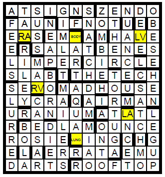
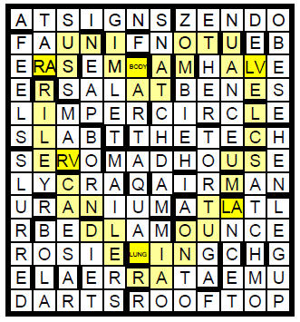
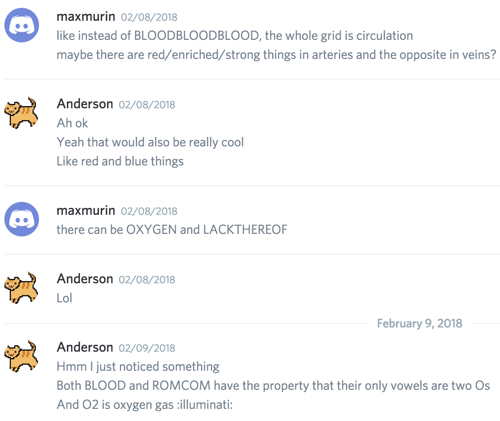

Solution: Earth-shattering
Answer: ROMCOM
Written by
Max Murin
Clues by Lewis Chen, Max Murin, Jon Schneider, Anderson Wang, and Ben Yang
To solve each cryptic clue, a letter O somewhere must be changed to a different letter. For example, 1 across, “Realigns second halo after headless rodents address parts”, should be “Realigns second half after headless rodents address parts”, for a solution of AT SIGNS (IGNS after ATS). The clue answers (in across, then down order) are:
| Clue | O → ? | Answer | Explanation |
|---|---|---|---|
| 1. Realigns second halo after headless rodents address parts (2 wds.) | F | AT SIGNS | (-r)ATS+(-real)IGNS = “address parts” |
| 6. Place to meditate on frozen dollars | I | ZENDO | “place to meditate” = ]ZEN DO[ |
| 11. Half-goat animals canoed the last bit | N | FAUN | “Half-goat” = FAUN(-a) |
| 13. Otherwise fluorine and nitric oxide shoo in a clown (2 wds.) | D | IF NOT | “otherwise” = I(F+NO)T |
| 14. Ages weird ores | A | ERAS | “ages” = <ERAS> |
| 15. Represent jewel with drooped head and physique | P | EMBODY | “represent” = (-g)EM+BODY |
| 17. Split own soy | A | HALVE | “split” = HALVE (HAVE homop.) |
| 19. Disturb a Laos prayer | T | SALAT | <SALAT> = “prayer” |
| 20. A sitcom character's seen souffles born first | H | BENES | “A sitcom character” = B+<ENES> |
| 21. Stumbler with less form | I | LIMPER | “stumbler”, “less firm” ddef. |
| 23. Heard a knight select the best peony outline | N | CIRCLE | CIRCLE (SIR CULL homop.) = “penny outline” |
| 24. Chunk of wood haloed early came back | T | SLAB | “chunk” = >(-a)SLAB |
| 26. MIT publication features aesthete cooking (2 wds.) | H | THE TECH | “MIT publication” = ]THETE CH[ |
| 29. Part of robot, blond, roves | E | SERVO | “part of robot” = <SERVO> |
| 30. Had ousted squeaker outside asylum | B | MADHOUSE | M(<ADH>)OUSE = “asylum” |
| 34. Constellation tokes 100% fiber | A | LYCRA | LY(+C)RA = “fiber” |
| 36. Smart computer cooed Italian flier | R | AIRMAN | AI+R(-o)MAN = “flier” |
| 37. No, I stock good amid strange rum and metal | L | URANIUM | <UR(A(N+I)U)M> = “metal” |
| 38. Spear lover at airport repeatedly | E | ATLATL | “spear lever” = ATL+ATL |
| 41. Place to rest and escape Mao's disorder | S | BEDLAM | BED+LAM = “mass disorder” |
| 44. Jump like Cato clearing first unit | S | OUNCE | (-p)OUNCE = “unit” |
| 45. Reno casinos start to say, “That is a riveting person?” | G | ROSIE | R(-en)O+S+IE = “a riveting person?” |
| 46. Thrusting limitless coater with mixed gin | R | LUNGING | “thrusting” = (-p)LUNG(-e)+<ING> |
| 47. Hesitation to, without me, console returning foxes | I | ERRATA | ER+>(-i)RATA = “fixes” |
| 48. Big biro eaten by a lemur | D | EMU | “Big bird” = ]EMU[ |
| 49. Game day about oars | T | DARTS | “Game” = D+<ARTS> |
| 50. Highest level or back of type of oat | H | ROOFTOP | “Highest level” = >RO+OF+TOP |
| 2. Crown codes one for strong voice actress | E | TARA | T(-i)ARA = “strong voice actress” |
| 3. Get last pieces of soot into curves | N | SUSS | “get” = S((-muc)US)S |
| 4. Again mildest ovens make drink | E | GIMLET | _G_I_M_L_E_T = “drink” |
| 5. Mao chants “Seize!” | D | SNATCH | <SNATCH> = “seize” |
| 6. Company backed in girl loving dead | I | ZOMBIE | ZO(>MBI)E = “living dead” |
| 7. The sky is there, shoo | T | ETHER | “the sky” = <ETHER> |
| 8. Oint with new-sounding acne mix | H | NUANCE | “hint” = NU+<ANCE> |
| 9. Send without one toilless probe | A | DELVE | DEL(-i)VE(-r) = “probe” |
| 10. Zero bees are crazed like some with gout | L | OBESE | O + <BESE> = “like some with glut” |
| 11. Endless sleep over after our head considers | F | FEELS | F+>(-p)EELS = “considers” |
| 12. New England saps oared the tide | B | NEAP | NE+(-s)AP(-s) = “tide” |
| 16. In limbo, doe artisans, without energy, make tattoos (2 wds.) | Y | BODY ART | ]BO DY(-e) ART[ = “tattoos” |
| 18. April eyes have loss from Inside Out | A | RILEY | ]RIL EY[ = “lass from Inside Out” |
| 22. Sin City hero's goo ascended in 1005 | D | MARV | “sin city hero” = M(>AR)V |
| 25. Created and carried empty solo | D | BORN | “Created” = BORN(-e) |
| 27. A daring spool returns to island | I | TORTUGA | >(TOR+TUG+A) = “island” |
| 28. Bird soared in the night | N | HEN | “bird” = ]HE N[ |
| 29. Dr. Rules orated and orated badly | G | SLURRED | <SLURRED> = “orated badly” |
| 30. Realism cost spammers | A | MAILERS | <MAILERS> = “spammers” |
| 31. A cook relative loses one antelope back in old scuba gear | C | AQUALUNG | A+QUA(-i)L+>UNG = “old scuba gear” |
| 32. A barrier toed backwards | E | DAM | “a barrier” = >DAM |
| 33. Joe foaming at musician's nickname | R | SATCHMO | S(AT)CHMO = “musician's nickname” |
| 35. Race as Reno emperor | T | CAESAR | <CAESAR> = “emperor” |
| 39. Alternative to a loser or weapon with time | A | LANCET | “alternative to a laser” = LANCE+T |
| 40. Luge foxed past starting edge (2 wds.) | I | LEG UP | <LEGU>+P = “edge” |
| 41. Throwing ball out with new beginning | N | BOLA | “throwing ball” = (K→B)OLA |
| 42. Cook Tide and consume no egos, for example | G | DIET | <DIET> = “consume no eggs, for example” |
| 43. Asian people heard the cot squeak | A | MIAO | “asian people” = MIAO (MEOW homop.) |
| 44. Aware of toon loot | S | ONTO | “aware of” = <ONTO> |
Some answers are too long to fit in the grid one letter per square, but by putting multiple letters in some squares, the grid can be filled out as follows:
The letters that the Os change to spell out the cluephrase FIND A PATH IN THE BARLESS GRID THEN EDIT HALF BY ADDING A CERTAIN GAS. The six rebus squares (i.e. squares with multiple letters) contain RA, BODY, LV, RV, LA, and LUNG, which are all parts of the heart/circulatory system (RA=right atrium, RV=right ventricle, LA=left atrium, LV=left ventricle). This suggests that the path should pass through these 6 rebus squares in the same order as the human body: RA→RV→LUNG→LA→LV→BODY→RA.
To constrain the path, we note that it’s possible to move between each pair of rebus squares to spell out a word (this is probably most visible with RV→LUNG, which spells CANDLE when zig-zagging down-right). The resulting path, which looks like a heart, is:
Starting from BODY, the words spelled out are MINUS, RILE, CANDLE, RAINOUT, MUSCLE, and AUTOMATA. Now we can finally use the second half of the message, which is EDIT HALF BY ADDING A CERTAIN GAS. Because this is the heart and each cryptic had an O changed, we can surmise that the gas is oxygen. By adding two Os to the words on the right, or deoxygenated, side of the heart, we can make the “oxygenated” words OMINOUS, ORIOLE, and CANOODLE. These new words match in length with the corresponding words on the left side of the heart:
| OMINOUS | ORIOLE | CANOODLE |
| RAINOUT | MUSCLE | AUTOMATA |
Taking the letters in the same positions of the added Os spells out the answer to the puzzle, ROMCOM.
Author’s Notes
The title “Earth-Shattering” is a cryptic wordplay for the word HEART. The thematic reason for adding two (as opposed to one) O’s is that oxygen gas is O2.
Throughout the hunt, we found that many teams were stuck because they had INOUT instead of RAINOUT. I originally used RAINOUT because it had the letters needed to make LUNGING work and we wanted each of the rebus squares to be double checked, but I should have tried harder to use something that’s more obviously not a word if you’re missing the first two letters and I apologize for not catching that beforehand. The fact that the other two words, MUSCLE and AUTOMATA, are both heart-related is a complete coincidence (both were chosen just to satisfy the answer constraints and to work with the grid), and I only found this out when a participant told me about it afterwards.
This puzzle evolved from a general idea that Max had, which was a puzzle about 5-letter bodily fluids, after he noticed that all the words in “blood, sweat, and tears” were 5 letters long. While brainstorming ideas for that puzzle, we thought of the related idea of a cryptic grid representing the body/heart somehow. We weren’t sure of the details, but we realized we had to make a puzzle about the circulatory system after the following conversation:
This general idea went through a lot of iterations before arriving at its final form. In particular, we had a lot of trouble with how to clue the path because at first, we wanted the positions of the LA, LV, RA, RV rebus squares to be physically accurate, but this made the path really long-winded and without any real pattern. We thought of ways we could use the cryptic clues to hint at the squares on the path, but we eventually realized that having a heart shape would feel a lot better and be self-confirming. Also, the original extraction idea (as mentioned in the above screenshot) involved writing the word BLOOD repeatedly on the path with answer letters thrown in, but we eventually decided that English words separated by the rebus squares would jump out more and came up with the “add two Os” idea to accommodate that.